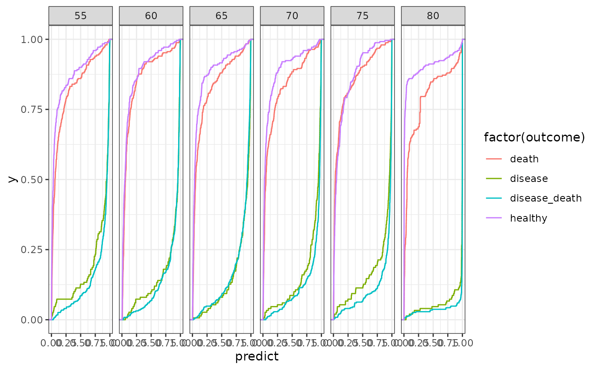

build an xgboost cross validation classification model with k-fold cross-validation for each featureset provided, assumed that the classification is defined by the previous model
Source:R/prediction_model.R
mldpEHR.disease_multi_age_predictors.Rdbuild an xgboost cross validation classification model with k-fold cross-validation for each featureset provided, assumed that the classification is defined by the previous model
Usage
mldpEHR.disease_multi_age_predictors(
patients,
features,
step,
nfolds,
required_conditions = "id==id",
xgboost_params = list(booster = "gbtree", objective = "binary:logistic", subsample =
0.7, max_depth = 3, colsample_bytree = 1, eta = 0.05, min_child_weight = 1, gamma =
0, eval_metric = "auc"),
nrounds = 1000
)Arguments
- patients
list of data.frames of all the patients in the system going back in time. For example the first data.frame represents age 80, next is 75 and so forth. Each patient data.frame contains the following columns:
patient id
sex
age
death - age at death, NA if unknown
disease - age at disease, NA if unknown
followup - available followup time (in years) for this patient - time until end of database or until patient exists the system (not due to death) and any additional columns required for patient filtering in the future
- features
list of data.frames of features
- step
time between prediction models
- nfolds
number of folds used for k-fold cross validation
- required_conditions
any filter to apply to the features to filter out training/testing samples (e.g. missing data)
- xgboost_params
parameters used for xgboost model training
- nrounds
number of training rounds
Value
the full list of predictors, according to provided patients, Each predictor is a list with the following members:
model - list of xgboost models, for each fold
train - data.frame containing the patients id, fold, target class and predicted value in training (each id was used in nfolds-1 for training)
test - data.frame containing the patients id, fold, target class and predicted value in testing (each id was tested once in the fold it was not used for training)
xgboost_params - the set of parameters used in xgboost
nrounds - number of training iterations conducted
Examples
library(dplyr)
library(ggplot2)
# build base predictor
N <- 1000
patients <- purrr::map(0:5, ~ data.frame(
id = 1:N,
sex = rep(1, N),
age = 80 - .x * 5,
death = c(rep(NA, 0.4 * N), rep(82, 0.6 * N)),
disease = rep(rep(c(NA, 81), each = N / 4), 2),
followup = .x * 5 + 5
)) %>%
setNames(seq(80, by = -5, length.out = 6))
features <- purrr::map(0:5, ~ data.frame(
id = 1:N,
a = c(rnorm(0.4 * N), rnorm(0.6 * N, mean = 2, sd = 1)),
b = rep(c(rnorm(N / 4), rnorm(N / 4, mean = 3)), 2)
)) %>% setNames(seq(80, by = -5, length.out = 6))
predictors <- mldpEHR.disease_multi_age_predictors(patients, features, 5, 3)
#>
#> Training [-----------------------------] 0/3 ( 0%) in 0s
#>
#> Training [=========>-------------------] 1/3 ( 33%) in 0s
#>
#> Training [==================>----------] 2/3 ( 67%) in 1s
#>
#> Training [=============================] 3/3 (100%) in 1s
#>
#>
#> Training [-----------------------------] 0/3 ( 0%) in 0s
#>
#> Training [=========>-------------------] 1/3 ( 33%) in 0s
#>
#> Training [==================>----------] 2/3 ( 67%) in 1s
#>
#> Training [=============================] 3/3 (100%) in 1s
#>
#>
#> Training [-----------------------------] 0/3 ( 0%) in 0s
#>
#> Training [=========>-------------------] 1/3 ( 33%) in 0s
#>
#> Training [==================>----------] 2/3 ( 67%) in 1s
#>
#> Training [=============================] 3/3 (100%) in 2s
#>
#>
#> Training [-----------------------------] 0/3 ( 0%) in 0s
#>
#> Training [=========>-------------------] 1/3 ( 33%) in 0s
#>
#> Training [==================>----------] 2/3 ( 67%) in 1s
#>
#> Training [=============================] 3/3 (100%) in 1s
#>
#>
#> Training [-----------------------------] 0/3 ( 0%) in 0s
#>
#> Training [=========>-------------------] 1/3 ( 33%) in 0s
#>
#> Training [==================>----------] 2/3 ( 67%) in 1s
#>
#> Training [=============================] 3/3 (100%) in 2s
#>
#>
#> Training [-----------------------------] 0/3 ( 0%) in 0s
#>
#> Training [=========>-------------------] 1/3 ( 33%) in 0s
#>
#> Training [==================>----------] 2/3 ( 67%) in 1s
#>
#> Training [=============================] 3/3 (100%) in 2s
#>
test <- purrr::map2_df(predictors, names(predictors), ~ .x$test %>%
mutate(n = .y) %>%
arrange(id) %>%
mutate(
outcome =
c(
rep("healthy", 0.25 * N),
rep("disease", 0.15 * N),
rep("disease_death", 0.1 * N),
rep("death", 0.25 * N),
rep("disease_death", 0.25 * N)
)
))
ggplot(test, aes(x = predict, colour = factor(outcome))) +
facet_wrap(~n, nrow = 1) +
stat_ecdf() +
theme_bw()
